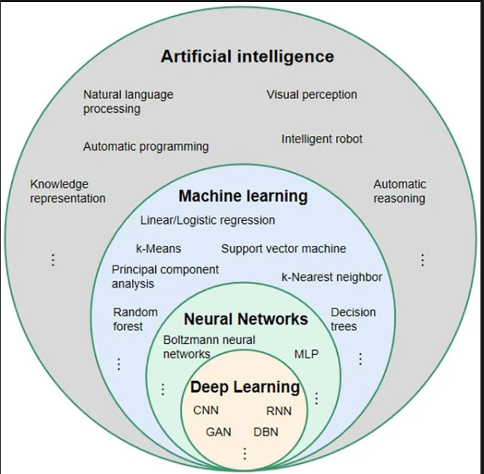
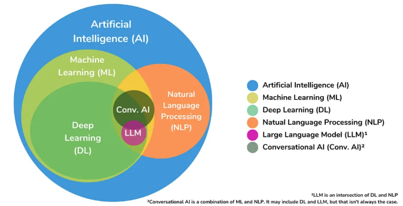
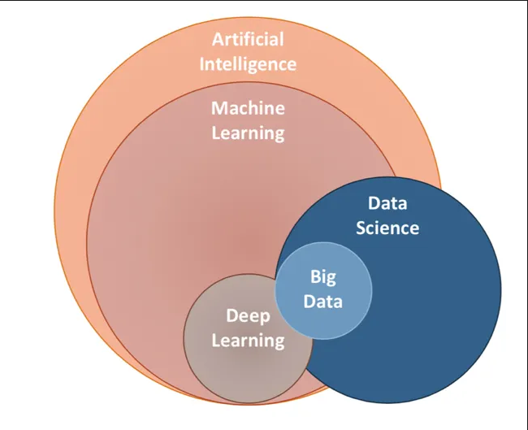
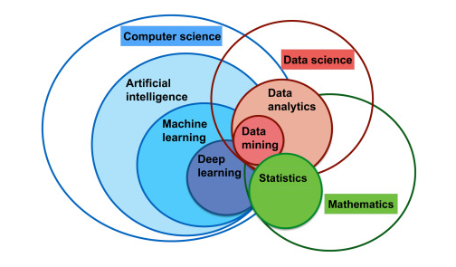
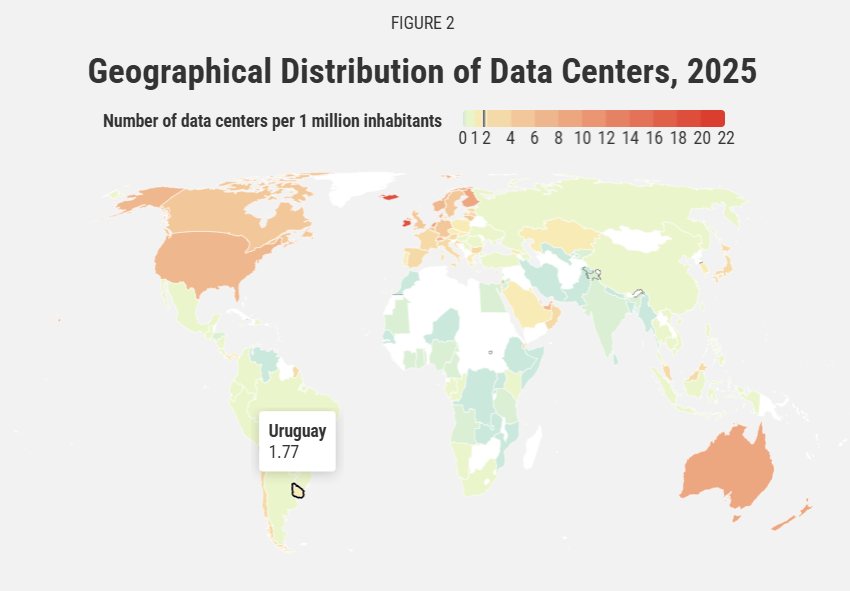
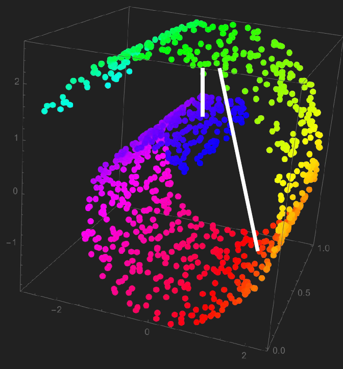

Let’s Talk About AI
Let’s Start With a Game…
What is the very first word (or words) that come to mind when someone mentions Artificial Intelligence?
- Go to slido.com and enter code #3791 5273 (or scan the QR code).
- Submit as many words as you like — we will capture this baseline map now and revisit it at the end of Part 1.

The BioEEnViS Opportunity
PhD Motivation: Bridging the Methodological Gap
- Early in my thesis, we considered AI to guide ecotoxicological experimental designs or extract experimental data.

→
The External Training Resource
- FRB-CESAB (Montpellier, June 2026): AI for Ecologists: A Toolkit — 5-day intensive course (all materials open-access).

Local Acknowledgment (independent of the BioEEnViS mobility grant): Prior to Montpellier, attending AI4BioMed in Lyon—mainly organized and promoted by LBBE members—introduced key terminology that made the CESAB transition much smoother.
The CESAB Experience
Four core modules covered during the 5-day FRB-CESAB program:
Module 1
Introduction to AI, History & Machine Learning Foundations
Module 2
Introduction to Deep Learning & Neural Architectures
Module 3
Applied Deep Learning
(Species Distribution Models & LLMs)
Module 4
Symbolic AI & Constraint-Based Reasoning
The CESAB Experience
All four modules converge on a single pedagogical objective:
Official Course Objective — ai-ecol.github.io
“Give participants the autonomy to assess which algorithms are most adapted to their own research questions, where to find them, and how to adjust them to the desired question.”
The CESAB Experience
Autonomy to assess which algorithms fit your research question (ai-ecol.github.io) \(\rightarrow\) Translated into 4 Core Insights (Today’s Roadmap)
Insight 1 · AI > Generative Chatbots
Section 1: Distinguish GenAI from the wider AI taxonomy (ML, DL, Symbolic AI) and examine cognitive & material guardrails.
Insight 2 · Domain Baseline Primes
Section 2: Your scientific (e.g., ecological) knowledge anchors plausibility and dictates how a problem is framed.
Note: This session is a curated synthesis of CESAB Day 1 principles — not a 5-day syllabus dump. Session 2 (10:45 a.m.) shows how these insights landed in my PhD.
Section 1: AI is an Umbrella Term
Insight 1a — Moving beyond chatbots to map the algorithmic toolkit
AI Is an Umbrella Term — Not a Monolith
Quick Poll (Slido 2): Which of these four diagrams correctly organises Artificial Intelligence?




Answer: All four are partial lenses.
There is no single formal definition of AI—each diagram highlights a different disciplinary cut (algorithms, language, data, or math).
Navigating the AI Vocabulary
In practice, researchers encounter a scattered soup of overlapping terms and tools:
Linear & Logistic Regression ChatGPT / Claude / Perplexity Symbolic Logic & Rules PCA / UMAP CNN & RNN Data Science & Statistics Random Forest & Decision Trees Intelligent Robots Neural Networks (MLP) Support Vector Machines (SVM) Knowledge Representation
Which field contains which—and where do everyday chatbots actually sit?
Navigating the AI Vocabulary
Organizing the umbrella into parallel domains and nested subsets:
ARTIFICIAL INTELLIGENCE (Umbrella Discipline)
Symbolic Logic & Rules Knowledge Representation Intelligent Robots
Explicit rules, ontologies, and constraint solving (e.g., protected-area design in CESAB Day 5).
Overlapping Quantitative Pillar Data Science & Statistics
Linear & Logistic Regression PCA / UMAP Support Vector Machines (SVM) Random Forest & Decision Trees
Neural Networks (MLP) CNN & RNN
GENERATIVE AI & LLMs (A small, highly visible subset) ChatGPT / Claude / Perplexity
Standard reference taxonomy: The OECD Framework for the Classification of AI Systems classifies systems by model type (symbolic, statistical, or hybrid), learning paradigm, and transparency.
My Initial Misconception & The Bio-Inspired Paradox
When I started learning ML, I assumed neural networks worked like my brain processing thoughts.
Inspired by biology — not biologically grounded (like a movie “based on true events”)
Biological Brain
- ~20 W power budget; slow electrochemical ionic spikes.
- Diverse chemical neurotransmitters & local synaptic plasticity.
- Learns flexibly and generalizes from few exposures.
[IMAGE: Biological Brain / Synaptic Network]
Save file as: assets/images/bio_brain_network.png
Artificial Neural Networks
- Matrix multiplications over floating-point weights.
- Global backpropagation optimizing a mathematical loss function.
- Requires massive datasets and computational energy.
[IMAGE: Artificial Neural Network / Perceptron Layers]
Save file as: assets/images/ann_perceptron_layers.png
The Paradox: Tools loosely inspired by human cognition are increasingly used in ways that short-circuit the very biological process our brains need to learn.
Conceptual inspiration: A. Andalman (The Deep View, 2025) · C. Simon (AI Neuro Insight, 2025) · A. Karpathy (Dwarkesh Clips, 2025) · AlphaFold (Nobel Prize in Chemistry, 2024)
Insight 1b: Cognitive Bypassing & Expertise
Empirical Evidence: Why Bypassing Hurts
- Barcaui (2025, RCT): Lower knowledge retention when using ChatGPT as a cognitive crutch.
- Gerlich (2025): Higher cognitive offloading linked to reduced critical thinking.
- Kosmyna et al. (2025, arXiv preprint): Reduced EEG neural connectivity and accumulated cognitive debt.
How LLMs Actually Operate
- LLMs are probabilistic next-token generators optimized for fluency—not truth-verification engines.
- Externalizing core analysis risks cognitive proletarianization (Stiegler, 2010): fluent outputs mask weak epistemic grounding and erode critical audit skills.
High Domain Background (Your Field): You form concrete hypotheses \(\rightarrow\) write precise prompts \(\rightarrow\) audit and catch errors.
Low Domain Background (Unfamiliar Field): Unclear what to ask \(\rightarrow\) vague prompts \(\rightarrow\) plausible errors go undetected.
Stiegler (2010) For a New Critique of Political Economy · Messeri & Crockett (2024) Nature 10.1038/s41586-024-07146-0 · Barcaui (2025) SSHO 10.1016/j.ssaho.2025.102287 · Gerlich (2025) Societies 10.3390/soc15010006 · Kosmyna et al. (2025) arXiv:2506.08872 (preprint) · Diagram adapted from J. Sung (2025)
Beyond Cognition: Material & Ecological Footprint
A brief factual check on the infrastructure behind large-scale AI workflows:
Energy & Resource Rebound
- Net \(\text{CO}_2\) Rebound: Global energy–economy modelling indicates that AI-driven productivity gains can enable more \(\text{CO}_2\) emissions than they avoid (Alpine et al., 2026).
- Local Water Competition: Rapid data-center expansion concentrates in regions with unresolved water-access pressures—for example, Uruguay (1.77) and Chile (3.49) data centers per 1 million inhabitants (IFC, 2026).
- Takeaway for Scientists: Proportionality matters—do not deploy heavy generative or deep-learning compute where a lightweight statistical model already answers the question.

“Only a tiny proportion of water in Uruguay is used for human consumption.” — Daniel Pena, University of the Republic (Rest of World, 2026)
Alpine et al. (2026) npj Clim. Action 5, 71 10.1038/s44168-026-00411-0 · International Finance Corporation (IFC, 2026) · Rest of World (2026)
Section 2: From Your Research Question to the Right Tool
Insights 2 & 3 — Domain baseline, dimensionality, and exhausting classical methods
When Does a Research Problem Need AI?
Scenario: Monitoring 100 river sites to explain or predict species richness across temperature, water chemistry, pollutants, and community variables.
What Is a “Dimension”?
- In Ecology / Env. Science: Usually 3D physical space \((x, y, z)\) + time.
- In Data Science / ML: Every measured river variable is an axis (\(d\)). Recording 50 chemistry, land-use, and species variables places each river site in a 50-dimensional space.
Scaling the River Study (\(n = 100\) sites)
Keeping \(n = 100\) sites fixed while adding axes makes the space exponentially sparse: straight-line Euclidean distances flatten, nearest neighbors stop being truly similar, and classical models run out of degrees of freedom.

In high \(d\), sites often lie on a curved lower-dimensional manifold; straight-line Euclidean distances (white lines) fail to identify truly similar sites.
The Methodological Filter — Matching the Toolkit to the River Study
- Stage 1 (1D–3D, known mechanism): Exhaust classical statistics first (Correlation, GLMs).
- Stage 2 (50D non-linear tabular data): Dimensionality reduction (PCA/UMAP) + Machine Learning (where my PhD fits).
- Stage 3 (Adding satellite imagery/audio or strict sampling constraints): Deep Learning or Symbolic AI.
Scaling the River Study: From Classical Stats to ML
Suppose our 100 river sites reach Stage 2 (50 variables, non-linear thresholds). What actually changes when stepping into ML?
Stage 1: Classical Baseline
\[\text{Richness} = a \cdot \text{Temp} + b + \varepsilon\]
1–3 predictors, solved analytically via OLS/GLM; slope \(a\) carries a direct biological meaning.
→
Stage 2: Same Study Framed as Machine Learning
\[\text{Richness} \sim f(\text{50 chemical, climate \& land-use features})\]
Framed via 3 ML building blocks: (1) Model (algorithm), (2) Loss Function (MSE for continuous richness; Cross-Entropy if classifying ecological status), and (3) Solver (iterative optimization, e.g., gradient descent).
As non-linearity or complexity grows, step deliberately along the toolkit \(\rightarrow\) Trees \(\rightarrow\) Random Forests \(\rightarrow\) SVMs \(\rightarrow\) Neural Nets.
| Classical Statistics Dictionary | Machine Learning Dictionary |
|---|---|
| Covariates / Explanatory variables (X) | Features / Inputs |
| Response variable (Y) & Residuals | Target / Label & Loss Function |
| Mechanistic / Biological parameters | Weights / Hyperparameters |
Key difference: ML weights optimize prediction and rarely carry direct biological meaning. Exhaust classical exploratory statistics first before scaling up.
Interactive Checkpoint: Your Research Question
How would you formulate one question from your own research as \(Y \sim X\)?
In Slido 3 (Code: #3791 5273), write a short 1-line formulation:
- Target (\(Y\)): What do you want to explain or predict? (continuous value or category?)
- Features (\(X\)): What predictors do you have—and roughly how many dimensions (\(d\))?
- Priority: Do you care more about mechanistic inference or predictive accuracy?
Section 3: The Modelling Trade-Off
Insight 4 — Balancing predictive performance and explainability
The Two Cultures & The Flexible Trade-Off
Data Modeling Culture (Classical Statistics)
- Assumes data arise from a specified stochastic/mechanistic process (e.g., GLMMs, ODEs).
- Primary goal: Parameter inference, uncertainty quantification, and causal interpretation.
↔︎
Algorithmic Modeling Culture (Machine Learning)
- Treats the underlying data-generating mechanism as unknown or too complex to write analytically.
- Primary goal: Out-of-sample predictive accuracy across high-dimensional, non-linear interactions.
A Pragmatic, Objective-Driven Choice: Interpretability is not a dogma—it is an explicit scientific decision. High-throughput screening (e.g., QSARs) may justify prioritizing accuracy; regulatory or mechanistic risk assessment demands explainability. Increasingly, hybrid pipelines combine both.
Breiman, L. (2001). Statistical modeling: The two cultures. Statistical Science, 16(3), 199–231. 10.1214/ss/1009213726 · Rudin, C. (2019). Stop explaining black box machine learning models for high stakes decisions and use interpretable models instead. Nature Machine Intelligence, 1, 206–215. 10.1038/s42256-019-0048-x
Closing the Loop & Bridge to Part 2
Revisit Slide 2: Our Opening Word Cloud
- Insight 1a: AI extends far beyond chatbots—spanning symbolic logic, classical ML, deep learning, and generative models.
- Insight 1b: Using GenAI responsibly means protecting cognitive friction and staying aware of its material footprint.
[LIVE CALLBACK: Switch to Slido 1 Word Cloud tab]
(Post-event: final exported word cloud will be archived on the workshop website)
How These 4 Insights Reshaped My PhD
(Part 2 — Today at 10:45)
- Matched to the spectrum: Tabular ecotoxicology data + regulatory explainability requirement \(\rightarrow\) kept mechanistic GUTS models at the core.
- Exhausted classical statistics first: Descriptive & linear multivariate audits before invoking ML.
- Deployed interpretable ML as an auditable meta-model: Identifying which experimental design features govern parameter precision.
Take-Home Messages
- AI is an Umbrella Toolkit: Map the taxonomy before choosing an algorithm—GenAI chatbots are only one narrow subset.
- Protect Cognitive Friction & Proportionality: Preserve your scientific savoir-faire and weigh the ecological footprint of heavy AI workflows.
- Earn Model Complexity: Check true dimensionality and exhaust classical statistical analyses before adopting ML.
- Align the Trade-Off to Your Goal: Use domain knowledge to decide where interpretability is essential, where predictive power wins, or where hybrid pipelines bridge both.
Next up today (after a 15-min break): 10:45 – 11:45 | Part 2 — Technical Case Study (Applied ML & GUTS experimental designs).
[QR CODE: FRB-CESAB Course]
ai-ecol.github.io
assets/images/qr_cesab_course.png
[QR CODE: Workshop Site & Contact]
assets/images/qr_workshop_contact.png
Thank you — Questions?
Anthony Fow Esteves · anthony.fow@univ-lyon1.fr
assets/images/LBBE_LOGO_color.png
assets/images/INRAE_LOGO_color.png
assets/images/BIOEENVIS_LOGO.png
Built with Quarto · Supported by FR BioEEnViS